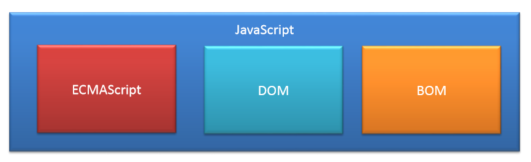
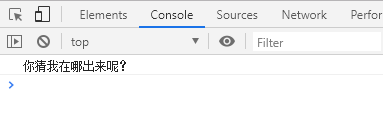
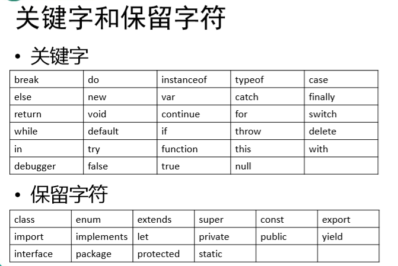
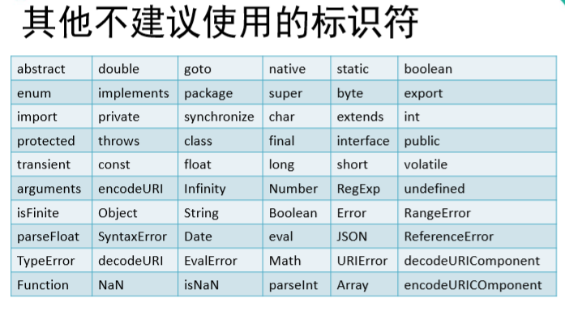
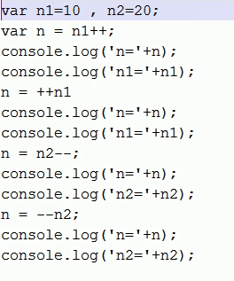
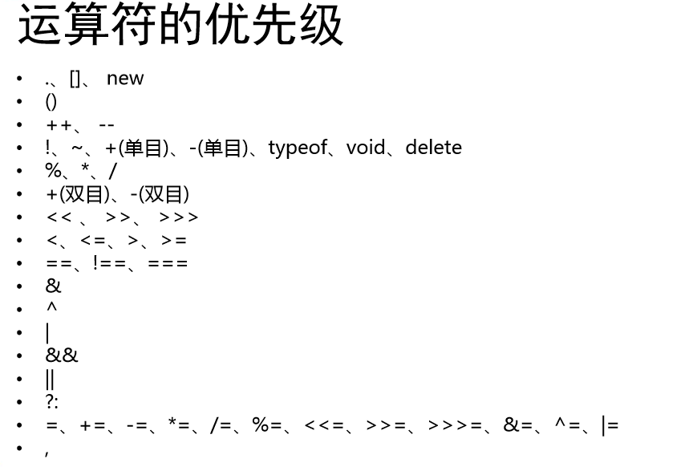

JavaScript
诞生于1995年，它的出现主要是用于处理网页中的 前端验证。 • 所谓的前端验证，就是指检查用户输入的内容是否符合一定的 规则。 • 比如：用户名的长度，密码的长度，邮箱的格式等。
JavaScript是由网景公司发明，起初命名为LiveScript，后来由 于SUN公司的介入更名为了JavaScript。1996年微软公司在其最新的IE3浏览器中引入了自己对 JavaScript的实现JScript。于是在市面上存在两个版本的JavaScript，一个网景公司的 JavaScript和微软的JScript。 • 为了确保不同的浏览器上运行的JavaScript标准一致，所以几 个公司共同定制了JS的标准名命名为ECMAScript。
JavaScript实现
我们已经知道ECMAScript是JavaScript标准，所以一般情况下 这两个词我们认为是一个意思。 • 但是实际上JavaScript的含义却要更大一些。 • 一个完整的JavaScript实现应该由以下三个部分构成：

编写第一个javescript页面
alert("");
控制浏览器弹出一个警告框，括号中填警告框中内容。
document.write("")
可以向body中输出一个内容，让计算机在页面中输出一个内容。括号中填输出内容。
console.log("")
向控制台输出一个内容。括号中填输出内容。
<!DOCTYPE html>
<html>
<head>
<meta charset="UTF-8">
<title></title>
<!--JS代码需要编写到script标签中-->
<script type="text/javascript">
alert("哥，你真帅啊！！");
document.write("看我出不出来~~~");
console.log("你猜我在哪出来呢？");
</script>
</head>
<body>
</body>
</html>需要注意的是：js语言的执行顺序是从上到下，所以输出顺序从上到下依次输出。
效果：
控制台中：

编写位置
我们目前学习的JS全都是客户端的JS，也就是说全都是需要在 浏览器中运行的，所以我们我们的JS代码全都需要在网页中编 写。
• 我们的JS代码需要编写到<script>标签中。
• 我们一般将script标签写到head中。（和style标签有点像）
• 属性： – type：默认值text/javascript可以不写，不写也是这个值。
– src：当需要引入一个外部的js文件时，使用该属性指向文件的地址
编写位置一：可以将js代码写在超链接的href属性中，这样当点击超链接时，会执行js代码
<!DOCTYPE html>
<html>
<head>
<meta charset="UTF-8">
<title></title>
</head>
<body>
<button onclick="alert('讨厌，你点我干嘛~~');">点我一下</button>
<a href="javascript:alert('让你点你就点！！');">你也点我一下</a>
<a href="javascript:;">你也点我一下</a>
</body>
</html>编写位置二：可以将js代码编写到script标签。或者在script标签引入外部编写的js文件，外部的js文件可以在不同的页面中同时引用，也可以利用到浏览器的缓存机制。（推荐使用的方式）
script标签一旦用于引入外部文件了，就不能在编写代码了，即使编写了浏览器也会忽略。如果需要则可以在创建一个新的script标签用于编写内部代码。
<!DOCTYPE html>
<html>
<head>
<meta charset="UTF-8">
<title></title>
<script type="text/javascript" src="js/script.js"></script>
<script type="text/javascript">
alert("我是内部的JS代码");
</script>
</head>
<body>
</body>
</html>JavaScript基本语法
1.JS中严格区分大小写
2.JS中每一条语句以分号(;)结尾
- 如果不写分号，浏览器会自动添加，但是会消耗一些系统资源，而且有些时候，浏览器会加错分号，所以在开发中分号必须写。
3.JS中会忽略多个空格和换行，所以我们可以利用空格和换行对代码进行格式化
4.单行注释和多行注释
<!DOCTYPE html>
<html>
<head>
<meta charset="UTF-8">
<title></title>
<script type="text/javascript">
/*
多行注释
JS注释
多行注释，注释中的内容不会被执行，但是可以在源代码中查看
要养成良好的编写注释的习惯，也可以通过注释来对代码进行一些简单的调试
*/
//单行注释
//alert("hello");
//document.write("hello");
console.log("hello"); //该语句用来在控制台输出一个日志
alert("hello");
</script>
</head>
<body
</body>
</html>字面量和变量
字面量：都是一些不可改变的值
比如 ：1 2 3 4 5
字面量都是可以直接使用，但是我们一般都不会直接使用字面量
变量：变量可以用来保存字面量，而且变量的值是可以任意改变的
变量更加方便我们使用，所以在开发中都是通过变量去保存一个字面量，而很少直接使用字面量，可以通过变量对字面量进行描述。
<!DOCTYPE html>
<html>
<head>
<meta charset="UTF-8">
<title></title>
<script type="text/javascript">
//声明变量
//在js中使用var关键字来声明一个变量
var a;
//为变量赋值
a = 123;
a = 456;
a = 123124223423424;
//声明和赋值同时进行
var b = 789;
var c = 0;
var age = 80;
console.log(age);
</script>
</head>
<body>
</body>
</html>标识符
在JS中所有的可以由我们自主命名的都可以称为是标识符，例如：变量名、函数名、属性名都属于标识符。
命名一个标识符时需要遵守如下的规则：
1.标识符中可以含有字母、数字、_、$
2.标识符不能以数字开头
3.标识符不能是ES中的关键字或保留字
4.标识符一般都采用驼峰命名法
- 首字母小写，每个单词的开头字母大写，其余字母小写。例如： helloWorld xxxYyyZzz
JS底层保存标识符时实际上是采用的Unicode编码，
*所以理论上讲，所有的utf-8中含有的内容都可以作为标识符


数据类型
在JS中一共有六种数据类型：
String 字符串
Number 数值
Boolean 布尔值
Null 空值
Undefined 未定义
Object 对象
其中String Number Boolean Null Undefined属于基本数据类型
* 而Object属于引用数据类型
String 字符串
在JS中字符串需要使用引号引起来，使用双引号或单引号都可以，但是不要混着用。 引号不能嵌套，双引号不能放双引号，单引号不能放单引号。
在字符串中我们可以使用\作为转义字符，当表示一些特殊符号时可以使用\进行转义
\" 表示 "
\' 表示 '
\n 表示换行
\t 制表符
\\ 表示\
<!DOCTYPE html>
<html>
<head>
<meta charset="utf-8" />
<title></title>
<script type="text/javascript">
var str = 'hello';
str = '我说:"今天天气真不错！"';
str = "我说:\"今天\t天气真不错！\"";
str = "\\\\\\";
//输出字面量 字符串str
alert("str");
//输出变量str
alert(str);
</script>
</head>
<body>
</body>
</html>
Number类型
在JS中所有的数值都是Number类型，包括整数和浮点数（小数）
JS中可以表示的数字的最大值
Number.MAX_VALUE
1.7976931348623157e+308
Number.MIN_VALUE(大于0的最小值)
5e-324
如果使用Number表示的数字超过了最大值，则会返回一个
Infinity 表示正无穷
Infinity 表示负无穷
使用typeof检查Infinity也会返回number
NaN 是一个特殊的数字，表示Not A Number
使用typeof检查一个NaN也会返回number
<!DOCTYPE html>
<html>
<head>
<meta charset="UTF-8">
<title></title>
<script type="text/javascript">
//数字123
var a = 123;
//字符串123
var b = "123";
a = -Number.MAX_VALUE * Number.MAX_VALUE;
//返回的结果是infinity
a = "abc" * "bcd";
console.log(typeof a);
//返回的结果是a = NaN;
console.log(typeof infinity)；
//返回的结果是number
console.log(typeof NaN)；
//返回的结果是number
/*
* 在JS中整数的运算基本可以保证精确
*/
var c = 1865789 + 7654321;
/*
* 如果使用JS进行浮点运算，可能得到一个不精确的结果
* 所以千万不要使用JS进行对精确度要求比较高的运算
*/
var c = 0.1 + 0.2;
console.log(c);
</script>
</head>
<body>
</body>
</html> Boolean类型
布尔值只有两个，主要用来做逻辑判断：
true
- 表示真
false
- 表示假
<!DOCTYPE html>
<html>
<head>
<meta charset="UTF-8">
<title></title>
<script type="text/javascript">
var bool = false;
/*
使用typeof检查一个布尔值时，会返回boolean
*/
console.log(typeof bool);
console.log(bool);
</script>
</head>
<body>
</body>
</html>Null和Undefined
Null（空值）类型的值只有一个，就是null。null这个值专门用来表示一个为空的对象。使用typeof检查一个null值时，会返回object
ndefined（未定义）类型的值只有一个，就undefind。当声明一个变量，但是并不给变量赋值时，它的值就是undefined。使用typeof检查一个undefined时也会返回undefined。
<!DOCTYPE html>
<html>
<head>
<meta charset="UTF-8">
<title></title>
<script type="text/javascript">
var a = null;
var b = undefined;
console.log(typeof b);
</script>
</head>
<body>
</body>
</html>强制类型转换
转换string类型
强制类型转换，指将一个数据类型强制转换为其他的数据类型。类型转换主要指，将其他的数据类型，转换为String Number Boolean。
方式一：将其他的数据类型转换为String
调用被转换数据类型的toString()方法，该方法不会影响到原变量，它会将转换的结果返回。但是注意：null和undefined这两个值没有toString()方法，如果调用他们的方法，会报错。
<!DOCTYPE html>
<html>
<head>
<meta charset="UTF-8">
<title></title>
<script type="text/javascript">
var a = 123;
//调用a的toString()方法
//调用xxx的yyy()方法，就是xxx.yyy()
a = a.toString();
a = true;
a = a.toString();
a = null;
//a = a.toString(); //报错
a = undefined;
//a = a.toString(); //报错
</script>
</head>
<body>
</body>
</html>方式二：调用String()函数，并将被转换的数据作为参数传递给函数
使用String()函数做强制类型转换时，对于Number和Boolean实际上就是调用的toString()方法。但是对于null和undefined，就不会调用toString()方法，它会将 null 直接转换为 "null"，将 undefined 直接转换为 "undefined"
<!DOCTYPE html>
<html>
<head>
<meta charset="UTF-8">
<title></title>
<script type="text/javascript">
a = 123;
//调用String()函数，来将a转换为字符串
a = String(a);
a = null;
a = String(a);
a = undefined;
a = String(a);
</script>
</head>
<body>
</body>
</html>转换为number
转换方式一：
使用Number()函数
字符串 --> 数字
1.如果是纯数字的字符串，则直接将其转换为数字
2.如果字符串中有非数字的内容，则转换为NaN
3.如果字符串是一个空串或者是一个全是空格的字符串，则转换为0
布尔 --> 数字
true 转成 1
false 转成 0
null --> 数字 0
undefined --> 数字 NaN
<!DOCTYPE html>
<html>
<head>
<meta charset="UTF-8">
<title></title>
<script type="text/javascript">
var a = "123";
//调用Number()函数来将a转换为Number类型
a = Number(a);
a = false;
a = Number(a);
a = null;
a = Number(a);
a = undefined;
a = Number(a);
</script>
</head>
<body>
</body>
</html>
转换方式二：
这种方式专门用来对付字符串
parseInt() 把一个字符串转换为一个整数
parseFloat() 把一个字符串转换为一个浮点数
<!DOCTYPE html>
<html>
<head>
<meta charset="UTF-8">
<title></title>
<script type="text/javascript">
a = "123567a567px";
//调用parseInt()函数将a转换为Number
/*
* parseInt()可以将一个字符串中的有效的整数内容去出来，
* 然后转换为Number
*/
a = parseInt(a);
/*
* parseFloat()作用和parseInt()类似，不同的是它可以获得有效的小数
*/
a = "123.456.789px";
a = parseFloat(a);
/*
* 如果对非String使用parseInt()或parseFloat()
* 它会先将其转换为String然后在操作
*/
a = true;
a = parseInt(a);
a = 198.23;
a = parseInt(a);
console.log(typeof a);
console.log(a);
</script>
</head>
<body>
</body>
</html>
其他的进制数字
在js中，如果需要表示16进制的数字，则需要以0x开头。如果需要表示8进制的数字，则需要以0开头。如果要要表示2进制的数字，则需要以0b开头。但是不是所有的浏览器都支持。
<!DOCTYPE html>
<html>
<head>
<meta charset="UTF-8">
<title></title>
<script type="text/javascript">
var a = 123;
//十六进制
a = 0x10;
a = 0xff;
a = 0xCafe;
//八进制数字
a = 070;
//二进制数字
//a = 0b10;
//像"070"这种字符串，有些浏览器会当成8进制解析，有些会当成10进制解析
a = "070";
//可以在parseInt()中传递一个第二个参数，来指定数字的进制
a = parseInt(a,10);
console.log(typeof a);
console.log(a);
</script>
</head>
<body>
</body>
</html>转换进制方法二：
<!DOCTYPE html>
<html>
<head>
<meta charset="utf-8" />
<title></title>
<script type="text/javascript">
//对于Number调用toString()时可以在方法中传递一个整数作为参数
//此时它将会把数字转换为指定的进制,如果不指定则默认转换为10进制
var a = 255;
a = a.toString(2);
console.log(a);
console.log(typeof a);
</script>
</head>
<body>
</body>
</html>
转换为boolean
将其他的数据类型转换为Boolean
使用Boolean()函数
数字 ---> 布尔
除了0和NaN，其余的都是true
字符串 ---> 布尔
除了空串，其余的都是true
null和undefined都会转换为false
对象也会转换为true
<!DOCTYPE html>
<html>
<head>
<meta charset="UTF-8">
<title></title>
<script type="text/javascript">
var a = 123; //true
a = -123; //true
a = 0; //false
a = Infinity; //true
a = NaN; //false
//调用Boolean()函数来将a转换为布尔值
a = Boolean(a);
a = " ";
a = Boolean(a);
a = null; //false
a = Boolean(a);
a = undefined; //false
a = Boolean(a);
console.log(typeof a);
console.log(a);
</script>
</head>
<body>
</body>
</html>
算术运算符
+
可以对两个值进行加法运算，并将结果返回
如果对两个字符串进行加法运算，则会做拼串
会将两个字符串拼接为一个字符串，并返回
任何的值和字符串做加法运算，都会先转换为字符串，然后再和字符串做拼串的操作
-
可以对两个值进行减法运算，并将结果返回
*
可以对两个值进行乘法运算
/
可以对两个值进行除法运算
%
取模运算（取余数）
<!DOCTYPE html>
<html>
<head>
<meta charset="UTF-8">
<title></title>
<script type="text/javascript">
result = 456 + 789;
//ture转换成1
result = true + 1;
//ture转换成1，false转换成0
result = true + false;
//null转换为0
result = 2 + null;
//任何数和null做运算都是null
result = 2 + NaN;
//拼串
result = "你好" + "大帅哥";
//拼串
var str = "锄禾日当午，" +
"汗滴禾下土，" +
"谁知盘中餐，" +
"粒粒皆辛苦";
//与字符串相加时，先转换成字符串，再拼串
result = 123 + "1";
//与字符串相加时，先转换成字符串，再拼串
result = true + "hello";
</script>
</head>
<body>
</body>
</html>
特别地，我们可以利用拼串操作，来将一个任意的数据类型转换为String。
我们只需要为任意的数据类型 + 一个 "" 即可将其转换为String。这是一种隐式的类型转换，由浏览器自动完成，实际上它也是调用String()函数。
同样地，任何值做- * /运算时都会自动转换为Number。
我们可以利用这一特点做隐式的类型转换可以通过为一个值 -0 *1 /1来将其转换为Number。 原理和Number()函数一样，使用起来更加简单。
<!DOCTYPE html>
<html>
<head>
<meta charset="UTF-8">
<title></title>
<script type="text/javascript">
var c = 123;
c = c + "";
c = null;
c = c + "";
result = 1 + 2 + "3"; //33
result = "1" + 2 + 3; //123
result = 100 - 5;
result = 100 - true;
result = 100 - "1";
result = 2 * 2;
result = 2 * "8";
result = 2 * undefined;
result = 2 * null;
result = 4 / 2;
result = 3 / 2;
//转换number类型最简单方法
var d = "123";
d = d - 0;
</script>
</head>
<body>
</body>
</html>一元运算符
+正号
正号不会对数字产生任何影响
- 负号
负号可以对数字进行负号的取反
对于非Number类型的值，
它会将先转换为Number，然后在运算
可以对一个其他的数据类型使用+,来将其转换为number
它的原理和Number()函数一样
<!DOCTYPE html>
<html>
<head>
<meta charset="UTF-8">
<title></title>
<script type="text/javascript">
var a = 123;
a = -a;
a = true;
a = "18";
a = +a;
var result = 1 + +"2" + 3;//6
console.log("result = "+result);
</script>
</head>
<body>
</body>
</html>
自增 ++
通过自增可以使变量在自身的基础上增加1
对于一个变量自增以后，原变量的值会立即自增1
自增分成两种：后++(a++) 和 前++(++a)
无论是a++ 还是 ++a，都会立即使原变量的值自增1
不同的是a++ 和 ++a的值不同
a++的值等于原变量的值（自增前的值）
++a的值等于新值 （自增后的值）
自减 --
通过自减可以使变量在自身的基础上减1
自减分成两种：后--(a--) 和 前--(--a)
无论是a-- 还是 --a 都会立即使原变量的值自减1
不同的是a-- 和 --a的值不同
a-- 是变量的原值 （自减前的值）
--a 是变量的新值 （自减以后的值）
<!DOCTYPE html>
<html>
<head>
<meta charset="UTF-8">
<title></title>
<script type="text/javascript">
var a = 1;
//结果都是2，但是a++的值为1，++a值为2.
a++;
++a;
var c = 10;
//第一次c++，是在10的基础上自增
c++;
//第二次c++，是在11的基础上自增
console.log(c++);
var d = 20;
console.log(++d);//21
console.log(++d);//22
//20 + 22 + 22
var result = d++ + ++d + d ;
//console.log("d = "+d);
</script>
</head>
<body>
</body>
</html>
小练习：

<!DOCTYPE html>
<html>
<head>
<meta charset="UTF-8">
<title></title>
<script type="text/javascript">
var n1=10;
var n2=20;
var n = n1++; //n1 = 11 n1++ = 10
console.log('n='+n); // 10
console.log('n1='+n1); //11
n = ++n1 //n1 = 12 ++n1 =12
console.log('n='+n); //12
console.log('n1='+n1); //12
n = n2--;// n2=19 n2--=20
console.log('n='+n); //20
console.log('n2='+n2); //19
n = --n2; //n2=18 --n2 = 18
console.log('n='+n); //18
console.log('n2='+n2); //18
</script>
</head>
<body>
</body>
</html>
逻辑运算符
JS中为我们提供了三种逻辑运算符
! 非
* - !可以用来对一个值进行非运算
* - 所谓非运算就是值对一个布尔值进行取反操作，
* true变false，false变true
* - 如果对一个值进行两次取反，它不会变化
* - 如果对非布尔值进行元素，则会将其转换为布尔值，然后再取反
* 所以我们可以利用该特点，来将一个其他的数据类型转换为布尔值
* 可以为一个任意数据类型取两次反，来将其转换为布尔值，
* 原理和Boolean()函数一样
*
&& 与
* - &&可以对符号两侧的值进行与运算并返回结果
* - 运算规则
* - 两个值中只要有一个值为false就返回false，
* 只有两个值都为true时，才会返回true
* - JS中的“与”属于短路的与，
* 如果第一个值为false，则不会看第二个值
*
|| 或
* - ||可以对符号两侧的值进行或运算并返回结果
* - 运算规则：
* - 两个值中只要有一个true，就返回true
* 如果两个值都为false，才返回false
* - JS中的“或”属于短路的或
* 如果第一个值为true，则不会检查第二个值
<!DOCTYPE html>
<html>
<head>
<meta charset="UTF-8">
<title></title>
<script type="text/javascript">
var a = false;
//对a进行非运算
a = !a;
console.log("a = "+a);
var b = 10;
//取两次反还是本身
b = !!b;
//如果两个值都是true则返回true
var result = true && true;
//只要有一个false，就返回false
result = true && false;
result = false && true;
result = false && false;
//如果两个值都是true则返回true
var result = true && true;
//第一个值为true，会检查第二个值
//true && alert("看我出不出来！！");
//第一个值为false，不会检查第二个值
//false && alert("看我出不出来！！");
//只有有一个true，就返回true
result = true || false;
result = false || true ;
result = true || true ;
</script>
</head>
<body>
</body>
</html>
非布尔值的与或运算
&& || 非布尔值的情况
对于非布尔值进行与或运算时，
会先将其转换为布尔值，然后再运算，并且返回原值
与运算：
如果第一个值为true，则必然返回第二个值
如果第一个值为false，则直接返回第一个值
或运算:
如果第一个值为true，则直接返回第一个值
如果第一个值为false，则返回第二个值
<!DOCTYPE html>
<html>
<head>
<meta charset="UTF-8">
<title></title>
<script type="text/javascript">
//true && true
//与运算：如果两个值都为true，则返回后边的
var result = 5 && 6;
//与运算：如果两个值中有false，则返回靠前的false
//false && true
result = 0 && 2;
result = 2 && 0;
//false && false
result = NaN && 0;
result = 0 && NaN;
//true || true
//如果第一个值为true，则直接返回第一个值
result = 2 || 1;
result = 2 || NaN;
result = 2 || 0;
//如果第一个值为false，则直接返回第二个值
result = NaN || 1;
result = NaN || 0;
result = "" || "hello";
result = -1 || "你好";
console.log("result = "+result);
</script>
</head>
<body>
</body>
</html>赋值运算符
a=5，中=就是赋值运算符。
a += 5 等价于 a = a + 5
-=
a -= 5 等价于 a = a - 5
*=
a *= 5 等价于 a = a * 5
/=
a /= 5 等价于 a = a / 5
%=
a %= 5 等价于 a = a % 5
关系运算符
通过关系运算符可以比较两个值之间的大小关系，* 如果关系成立它会返回true，如果关系不成立则返回false
> 大于号
判断符号左侧的值是否大于右侧的值
如果关系成立，返回true，如果关系不成立则返回false
>= 大于等于
判断符号左侧的值是否大于或等于右侧的值
< 小于号
判断符号左侧的值是否小于右侧的值
<= 小于等于
判断符号左侧的值是否小于或等于右侧的值
<!DOCTYPE html>
<html>
<head>
<meta charset="UTF-8">
<title></title>
<script type="text/javascript">
var result = 5 > 10;//false
result = 5 > 4; //true
result = 5 > 5; //false
result = 5 >= 5; //true
result = 5 >= 4; //true
result = 5 < 4; //false
result = 4 <= 4; //true
console.log(1 > true); //false
console.log(1 >= true); //true
console.log(1 > "0"); //true
console.log(10 > null); //true
任何值和NaN做任何比较都是false
console.log(10 <= "hello"); //false
console.log(true > false); //true
console.log("1" < "5"); //true
console.log("11" < "5"); //true
//比较两个字符串时，比较的是字符串的字符编码
console.log("1" < "5"); //true
console.log("11" < "5"); //true
//比较两个字符串时，比较的是字符串的字符编码
console.log("a" < "b");//true
//比较字符编码时是一位一位进行比较
//如果两位一样，则比较下一位，所以借用它来对英文进行排序
console.log("abc" < "bcd");//true
//比较中文时没有意义
console.log("戒" > "我"); //true
//如果比较的两个字符串型的数字，可能会得到不可预期的结果
//注意：在比较两个字符串型的数字时，一定一定一定要转型
console.log("11123123123123123123" < +"5"); //true
</script>
</head>
<body>
</body>
</html>unicode编码表
<!DOCTYPE html>
<html>
<head>
<meta charset="UTF-8">
<title></title>
<script type="text/javascript">
/*
* 在字符串中使用转义字符输入Unicode编码
* \u四位编码
*/
console.log("\u2620");
</script>
</head>
<body>
<!--在网页中使用Unicode编码
&#编码; 这里的编码需要的是10进制
-->
<h1 style="font-size: 200px;">☠</h1>
<h1 style="font-size: 200px;">⚀</h1>
</body>
</html>相等运算符
相等运算符用来比较两个值是否相等，如果相等会返回true，否则返回false。
==
相等
当使用==来比较两个值时，如果值的类型不同，则会自动进行类型转换，将其转换为相同的类型然后在比较。
!=
不相等
不相等也会对变量进行自动的类型转换，如果转换后相等它也会返回false
===
全等
用来判断两个值是否全等，它和相等类似，不同的是它不会做自动的类型转换。 如果两个值的类型不同，直接返回false。
!==
不全等
用来判断两个值是否不全等，和不等类似，不同的是它不会做自动的类型转换。如果两个值的类型不同，直接返回true。
<!DOCTYPE html>
<html>
<head>
<meta charset="UTF-8">
<title></title>
<script type="text/javascript">
console.log(1 == 1); //true
var a = 10;
console.log(a == 4); //false
console.log("1" == 1); //true
console.log(true == "1"); //true
console.log(null == 0); //false
/*
* undefined 衍生自 null
* 所以这两个值做相等判断时，会返回true
*/
console.log(undefined == null);
/*
* NaN不和任何值相等，包括他本身
*/
console.log(NaN == NaN); //false
//判断b的值是否是NaN
//console.log(b == NaN);//不能用此方法
/*
* 可以通过isNaN()函数来判断一个值是否是NaN
* 如果该值是NaN则返回true，否则返回false
*/
console.log(isNaN(b));
console.log(10 != 5); //true
console.log(10 != 10); //false
console.log("abcd" != "abcd"); //false
console.log("1" != 1);//false
console.log("123" === 123);//false
console.log(null === undefined);//false
console.log(1 !== "1"); //true
</script>
</head>
<body>
</body>
</html>条件运算符(三元运算符)
语法：
*条件表达式?语句1:语句2;
执行的流程：
条件运算符在执行时，首先对条件表达式进行求值，
如果该值为true，则执行语句1，并返回执行结果
如果该值为false，则执行语句2，并返回执行结果
如果条件的表达式的求值结果是一个非布尔值，
会将其转换为布尔值然后在运算
<!DOCTYPE html>
<html>
<head>
<meta charset="UTF-8">
<title></title>
<script type="text/javascript">
var a = 300;
var b = 143;
var c = 50;
a > b ? alert("a大"):alert("b大");
//获取a和b中的最大值
var max = a > b ? a : b;
//获取a b c 中的大值
max = max > c ? max : c;
//这种写法不推荐使用，不方便阅读
var max = a > b ? (a > c ? a :c) : (b > c ? b : c);
//非布尔值
console.log("max = "+max);
"hello"?alert("语句1"):alert("语句2");
</script>
</head>
<body>
</body>
</html>
运算符的优先级
就和数学中一样，在JS中运算符也有优先级， 比如：先乘除 后加减
在JS中有一个运算符优先级的表，在表中越靠上优先级越高，优先级越高越优先计算，如果优先级一样，则从左往右计算。但是这个表我们并不需要记忆，如果遇到优先级不清楚可以使用()来改变优先级。
